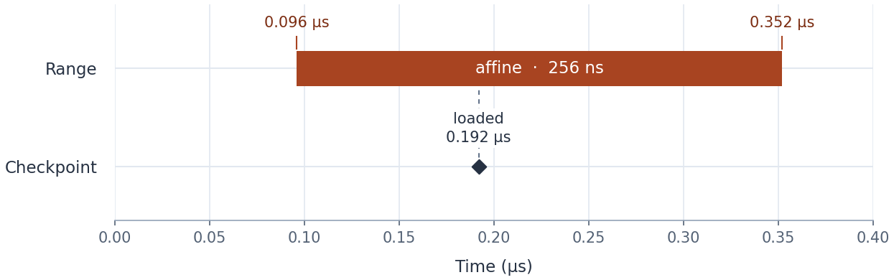

IKET Profiling#
In this chapter, we will use NVIDIA IKET to trace the execution of a
small kernel that computes B[i] = 2 * A[i] + 1. We will place a named
range around the computation and a checkpoint after the input read, then
capture a timeline and inspect the recorded events.
The example requires a CUDA-enabled TIRx build, an SM90-or-newer GPU,
NVRTC through cuda-bindings, and the run-iket executable from
nvidia-cutlass-dsl-libs-base.
Annotate a computation#
Save the following kernel and the host code below in
profile_affine.py:
import torch
from tvm_tirx.backend.cuda import iket
from tvm_tirx.backend.cuda.iket import IketProfiler
from tvm_tirx.script import tirx as T
@T.function
def profiled_affine(
A: T.Tensor((32,), T.float32), B: T.Tensor((32,), T.float32)
):
with T.device_entry(launch=T.cuda.LaunchConfig(grid=(1,), block=(32,))):
profiler = IketProfiler()
tid = T.cuda.thread_idx("x")
profiler.range_push("affine")
value = A[tid]
profiler.mark("loaded")
B[tid] = T.float32(2) * value + T.float32(1)
profiler.range_pop()
IketProfiler inserts the event annotations. range_push("affine")
begins a named range, and range_pop() ends it. The loaded mark
places a checkpoint after the tensor read. These events will appear in
the captured trace. They do not replace synchronization needed by the
kernel’s data dependencies.
Capture the kernel#
The host workload compiles the instrumented kernel, runs it, and checks
its result. GPU initialization, compilation, and execution belong inside
workload because IKET replays this callable during its tracking and
capture passes:
def workload():
compiled = IketProfiler().compile(profiled_affine, target="cuda")
a = torch.arange(32, dtype=torch.float32, device="cuda")
b = torch.empty_like(a)
compiled(a, b)
torch.cuda.synchronize()
torch.testing.assert_close(b, 2 * a + 1)
if __name__ == "__main__":
result = iket.run(
workload, output_dir="iket_affine_trace", postprocess="all"
)
print(result.trace_json)
print(result.perfetto)
print(result.html)
Run the saved script with python profile_affine.py.
IketProfiler.compile enables the profiling lowering, while
iket.run replays the script under NVIDIA’s tracker and capture tools.
After the capture completes, the parent process receives the result and
prints the artifact paths. Use a fresh output directory for each capture,
or pass clobber=True to replace an earlier capture.
Read the trace#
result.perfetto identifies the timeline file, result.html the
HTML report, and result.trace_json the JSON trace. Open the Perfetto
file in the Perfetto UI and expand the kernel’s warp track. The
StackedRanges row contains the affine bar, and the Marker row
contains the loaded checkpoint.


A simplified timeline redrawn from one B200 capture. Times are in µs.#
The affine bar covers the code between range_push and
range_pop. In this capture, its duration is 0.352 - 0.096 = 0.256 µs,
or 256 ns. The loaded checkpoint at 0.192 µs marks the point after
the input read. It falls inside the range and records a timestamp.
Select the bar or marker in Perfetto to inspect those values.
Instrumentation adds work, so measure the uninstrumented kernel separately when assessing its overall performance.
The IKET API covers token-based
ranges, command-based capture with iket.profile, and capture options.
The CUDA backend source guide explains where
the profiling annotations are lowered in the compilation pipeline.